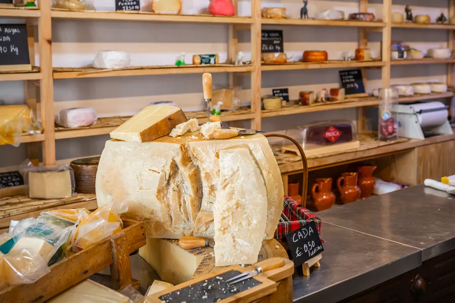
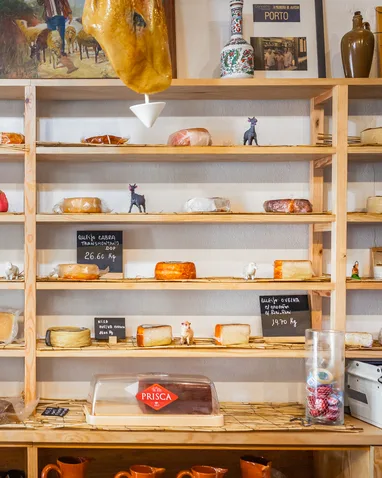
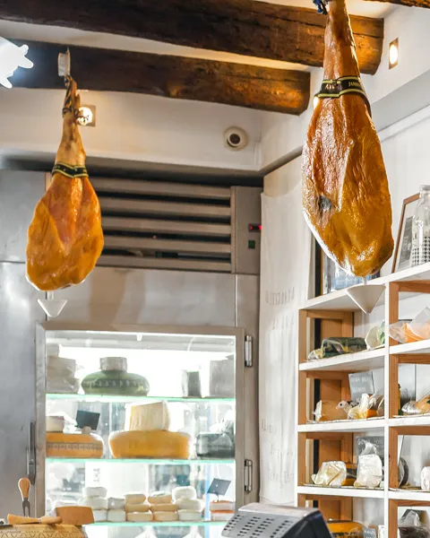
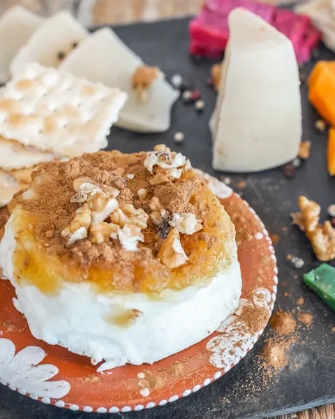
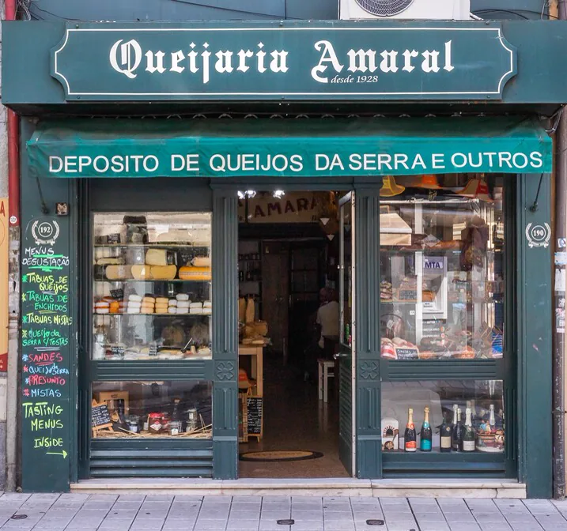
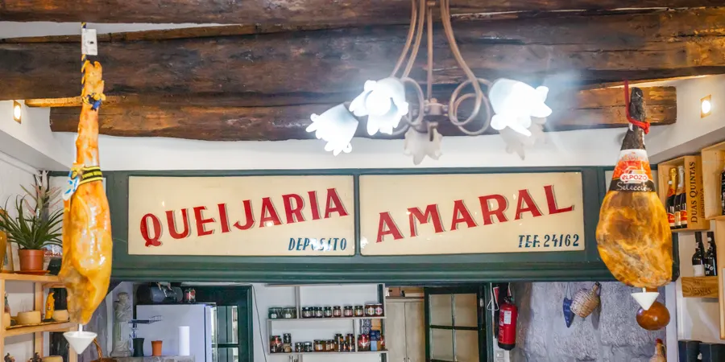

A queijaria mais antiga do Porto.
Queijo da Serra da Estrela, cerca de cinquenta queijos de todo o país, presunto e fumeiro. Rua de Santo Ildefonso, 190.

Do balcão para a sua mesa
-

Queijos
Serra da Estrela e cerca de cinquenta de outras regiões.
-

Presunto e fumeiro
Presunto, enchidos fumados e pão de Bragança, Mirandela e Avintes.
-

Tábuas para provar
De queijos, de enchidos ou mistas, servidas na loja.

Quase um século ao balcão
Loja histórica do programa Porto de Tradição. Diga-nos o que procura e ajudamos a escolher.
Entre, prove, leve.
